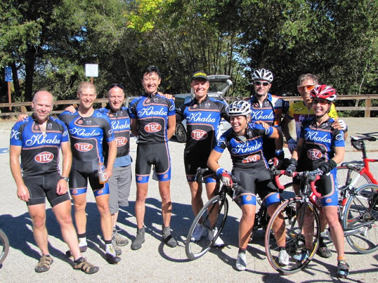

Low-Key Hillclimbs Aggregate Results:
Hwy 9 from Boulder Creek
generated Fri Nov 4 10:34:14 PDT 2016
|
|  |
| 2012 week 4: organizers Team Brown Zone post at summit (Brenda Brunner) |
Results are listed here from the Low-Key archives, sorted by time for each climb. Some years start and/or finish time differ slightly, such as
with Kings Mt Road where after 1995 the start moved from Entrance Way to Greer.
Results are ranked by time first, score second.
Score is calculated using a simple percent-of-median-speed
formula, with time adjustments for division. These scores will generally differ from those calculated in the results for that particular year, since
the scoring scheme has evolved. Tandems are split between 1998, when they were counted as single participants, and other years, when the individual
riders have been counted separately
Results for Men
| rank | time | score | rider | cat | team | year | week | code |
|---|
| 1 | 46:20 | 125.540 | Rob Manchester | 35+ | | 2012 | 4 | |
| 2 | 47:31 | 122.413 | Adrien Costa | Junior | Slipstream-Craddock Jr. Development | 2012 | 4 | |
| 3 | 48:14 | 120.594 | Rich Brown | 35+ | The Brown Zone | 2012 | 4 | |
| 4 | 48:20 | 120.345 | josh pizzica | 35+ | Gene-Solve/Etxea | 2012 | 4 | |
| 5 | 48:24 | 120.179 | Kieran Sherlock | 45+ | Western Wheelers | 2012 | 4 | |
| 6 | 48:26 | 120.096 | Clark Foy | 45+ | Western Wheelers | 2012 | 4 | |
| 7 | 48:30 | 119.931 | Tim Clark | 45+ | Low-Key | 2012 | 4 | |
| 8 | 48:32 | 119.849 | Carl Nielson | 50+ | Sr's & Mr's of No Mercy | 2012 | 4 | |
| 9 | 49:49 | 116.761 | Chris Furgiuele | 35+ | Dolce Vita Cycling | 2012 | 4 | |
| 10 | 49:56 | 116.489 | Ciaran Byrne | 40+ | Sr's & Mr's of No Mercy | 2012 | 4 | |
| 11 | 49:58 | 116.411 | Alan Nevin | 40+ | IronData Thirsty Bear | 2012 | 4 | |
| 12 | 50:17 | 115.678 | Dennis Van Hoof | 35+ | Type 1 Diabetes | 2012 | 4 | |
| 13 | 50:43 | 114.689 | Robby Cuthbert | 20+ | Hausbert | 2012 | 4 | |
| 14 | 51:05 | 113.866 | Stefano Profumo | 30+ | Bike Trip/Symantec | 2012 | 4 | |
| 15 | 51:27 | 113.055 | Daryl Spano | 45+ | San Jose Bike Club | 2012 | 4 | |
| 16 | 52:02 | 111.787 | Geoff Drake | 50+ | Bike Trip/Symantec | 2012 | 4 | |
| 17 | 52:15 | 111.324 | David Gonzales | 35+ | | 2012 | 4 | |
| 18 | 52:23 | 111.040 | Travis Retzer | 4 | Eden Bicycles | 2012 | 4 | |
| 19 | 52:25 | 110.970 | Chris Kovacs | 35+ | Eden Bicycles | 2012 | 4 | |
| 20 | 52:39 | 110.478 | H Two Brown | 50- | The Brown Zone | 2012 | 4 | |
| 21 | 52:50 | 110.095 | Rob Easley | 45+ | Sr's & Mr's of No Mercy | 2012 | 4 | |
| 22 | 53:25 | 108.892 | Joe Karbowski | 30+ | | 2012 | 4 | |
| 23 | 53:26 | 108.858 | Andy Crews | 40+ | Diablo | 2012 | 4 | |
| 24 | 53:45 | 108.217 | Mark King | 45+ | IC3 Hammer Nutrition | 2012 | 4 | |
| 25 | 54:08 | 107.451 | Edvard Wendelin | 25+ | | 2012 | 4 | |
| 26 | 54:20 | 107.055 | Brian Haines | 35+ | Taleo Racing | 2012 | 4 | |
| 27 | 54:27 | 106.826 | Joe Fant | 50+ | The Brown Zone | 2012 | 4 | |
| 28 | 55:24 | 104.994 | Slow Brown | Two Flat Tires | The Brown Zone | 2012 | 4 | |
| 28 | 55:24 | 104.994 | Gonzalo Carrillo | 45+ | Team Fremont FFBC p/b Chipotle | 2012 | 4 | |
| 30 | 55:26 | 104.931 | Sunil Jagadish | 25+ | San Jose Bike Club | 2012 | 4 | |
| 31 | 55:41 | 104.460 | Bryn Dole | 40+ | Blekko | 2012 | 4 | |
| 32 | 56:16 | 103.377 | J.D. Daniels | 35+ | Eden Bicycles | 2012 | 4 | |
| 33 | 56:19 | 103.285 | Dino Brown | Dual Suspension Beast | The Brown Zone | 2012 | 4 | |
| 34 | 56:20 | 103.254 | Bill Dvorak | 55+ | | 2012 | 4 | |
| 35 | 56:37 | 102.738 | Anthony Jawad | 25+ | Google | 2012 | 4 | |
| 36 | 56:58 | 102.106 | Jim Perreira | 45+ | | 2012 | 4 | |
| 37 | 57:14 | 101.631 | Brad Fox | 30+ | LGBRC | 2012 | 4 | |
| 38 | 58:05 | 100.143 | Peter Ingram | 55+ | Ind. | 2012 | 4 | |
| 39 | 58:10 | 100.000 | David Vrane | 45+ | Sr's & Mr's of No Mercy | 2012 | 4 | |
| 40 | 58:30 | 99.430 | Thomas Rabedeau | 55+ | SLACer | 2012 | 4 | |
| 41 | 58:56 | 98.699 | Ramon Alarcon | 40+ | San Jose Bike Club | 2012 | 4 | |
| 42 | 59:36 | 97.595 | Rick Ferrell | 50+ | Bike Trip/Symantec | 2012 | 4 | |
| 43 | 59:38 | 97.541 | Pierre Doussiere | 50+ | Mysef | 2012 | 4 | |
| 44 | 59:41 | 97.459 | Franz Kelsch | 65 Almost | Pan y Agua | 2012 | 4 | |
| 45 | 59:59 | 96.971 | Mihai R. | 30+ | Google | 2012 | 4 | |
| 46 | 60:25 | 96.276 | pat callahan | 40+ | Quadzilla Racing | 2012 | 4 | |
| 47 | 60:57 | 95.433 | Kevin Comerford | 30+ | Sr's & Mr's of No Mercy | 2012 | 4 | |
| 47 | 60:57 | 95.433 | Will von Kaenel | 50+ | LGBRC | 2012 | 4 | |
| 49 | 61:06 | 95.199 | Scott Byer | 45+ | Google | 2012 | 4 | |
| 50 | 61:20 | 94.837 | Nick Bellomo | 30+ | Type 1 Diabetes | 2012 | 4 | |
| 51 | 61:24 | 94.734 | Thomas Preisler | 55+ | LGBRC | 2012 | 4 | |
| 52 | 61:46 | 94.172 | MichaelsJ. Andalora | 60+ | Bike Trip/Symantec | 2012 | 4 | |
| 53 | 62:02 | 93.767 | Tommy Aldo Sonin | 30+ | | 2012 | 4 | |
| 54 | 62:21 | 93.291 | Brandon Iles | 30+ | Google | 2012 | 4 | |
| 55 | 62:40 | 92.819 | Greg Watson | 45+ | Palo Verde Velo | 2012 | 4 | |
| 56 | 63:11 | 92.060 | Nic Brummell | 50+ | Atlas | 2012 | 4 | |
| 57 | 63:45 | 91.242 | Bart Niechwiej | 35+ | Google | 2012 | 4 | |
| 58 | 64:00 | 90.885 | George Bonanto | Clydesdale | Google | 2012 | 4 | |
| 59 | 64:09 | 90.673 | Wink Saville | 60+ | Google | 2012 | 4 | |
| 60 | 64:26 | 90.274 | Eddie Santos | 25+ | | 2012 | 4 | |
| 61 | 64:38 | 89.995 | Ed Miller | 70+ | SLACer | 2012 | 4 | |
| 62 | 64:41 | 89.925 | Bernard Bell | 50+ | | 2012 | 4 | |
| 63 | 65:17 | 89.099 | Stephen Fong | 45+ | CyclePath Racing | 2012 | 4 | |
| 64 | 65:46 | 88.444 | Peter Cathcart | 50+ | San Jose Bike Club | 2012 | 4 | |
| 65 | 65:57 | 88.198 | Russ McCrary | 50+ | Sr's & Mr's of No Mercy | 2012 | 4 | |
| 66 | 66:10 | 87.909 | Steve Bursley | 45+ | Team Wild Hare | 2012 | 4 | |
| 67 | 66:18 | 87.733 | Kevin Colagiovanni | 25+ | Team DUD | 2012 | 4 | |
| 68 | 66:48 | 87.076 | Danny Froeming | 45+ | | 2012 | 4 | |
| 69 | 67:28 | 86.215 | Nico Sallembien | 35+ | Silicon Valley Triathlon | 2012 | 4 | |
| 70 | 67:41 | 85.939 | Alex Cortez | 40+ | Team Fremont FFBC p/b Chipotle | 2012 | 4 | |
| 71 | 68:01 | 85.518 | Fernando Colmenares | 65+ | Team Fremont FFBC p/b Chipotle | 2012 | 4 | |
| 72 | 68:13 | 85.268 | Thomas Maltbaek | 20+ | MTBR | 2012 | 4 | |
| 73 | 69:52 | 83.254 | Kris McQueen | 35+ | Diablo | 2012 | 4 | |
| 74 | 70:28 | 82.545 | Ronald Ng | 45+ | | 2012 | 4 | |
| 75 | 71:13 | 81.676 | Han Wen | 40+ | Grumpy Old Men (GOM) | 2012 | 4 | |
| 76 | 73:09 | 79.517 | Thomas Maslen | 50+ | Western Wheelers | 2012 | 4 | |
| 77 | 80:08 | 72.587 | Matt Wittmann | 25+ | | 2012 | 4 | |
| 78 | 93:35 | 62.155 | Skyler Colwell | Junior | Team Colwell | 2012 | 4 | |
| 79 | 129:33 | 44.899 | Liam Colwell | Junior | Team Colwell | 2012 | 4 | |
Results for Women
| rank | time | score | rider | cat | team | year | week | code |
|---|
| 1 | 55:36 | 126.196 | Lisa Penzel | 45+ | The Brown Zone | 2012 | 4 | |
| 2 | 58:48 | 119.328 | Lynn Sestak | 50+ | The Brown Zone | 2012 | 4 | |
| 3 | 59:08 | 118.655 | Amy Cameron | 30+ | Sr's & Mr's of No Mercy | 2012 | 4 | |
| 4 | 59:29 | 117.957 | Janet Martinez/Gardner | | Sr's & Mr's of No Mercy | 2012 | 4 | |
| 5 | 62:47 | 111.757 | Roxy Brown | 40+ | The Brown Zone | 2012 | 4 | |
| 6 | 62:51 | 111.639 | Sugar Brown | Brown | The Brown Zone | 2012 | 4 | |
| 7 | 62:53 | 111.579 | Laura Hipp | 4 | Western Wheelers | 2012 | 4 | |
| 8 | 65:28 | 107.176 | Lisa Emmerich | 50+ | Sr's & Mr's of No Mercy | 2012 | 4 | |
| 9 | 67:12 | 104.412 | Julie Colwell | 40+ | Team Colwell | 2012 | 4 | |
| 10 | 68:08 | 102.982 | Sandra King | 40+ | Team Fremont FFBC p/b Chipotle | 2012 | 4 | |
| 11 | 69:42 | 100.667 | Heidi Fraser | 50+ | Taleo Racing | 2012 | 4 | |
| 12 | 71:03 | 98.754 | Hannah Hausman | 20+ | Hausbert | 2012 | 4 | |
| 13 | 80:58 | 86.659 | Darlene Stevenson | 40+ | | 2012 | 4 | |
| 14 | 82:06 | 85.463 | Christine Holmes | 45+ | Low-Key | 2012 | 4 | |
| 15 | 82:41 | 84.860 | andrea ivan | | Silicon Valley Triathlon | 2012 | 4 | |
| 16 | 97:59 | 71.609 | Judy Colwell & Rufus | 70+ | Team Colwell | 2012 | 4 | |
| 17 | 102:24 | 68.520 | Nina Komlik | 45+ | | 2012 | 4 | |
Results for Tandem
| rank | time | score | rider | cat | team | year | week | code |
|---|
| 1 | 52:47 | 110.199 | Paul McKenzie | 55+ | Sr's & Mr's of No Mercy | 2012 | 4 | |
| 1 | 52:47 | 110.199 | Paul Chuck | 55+ | Sr's & Mr's of No Mercy | 2012 | 4 | |
| 3 | 73:36 | 79.031 | Tracy Colwell | 40+ | Team Colwell | 2012 | 4 | |
| 3 | 73:36 | 79.031 | Hadley Colwell | Junior | Team Colwell | 2012 | 4 | |
| 5 | 105:51 | 54.952 | David Engelbrecht | 40+ | Summit Chuters | 2012 | 4 | |
| 5 | 105:51 | 54.952 | Rachel Engelbrecht | 10/15/2012 | Summit Chuters | 2012 | 4 | |
Results for Male Runner
| rank | time | score | rider | cat | team | year | week | code |
|---|
| 1 | 112:52 | 51.536 | Daniel Connelly | 3 | Low-Key | 2012 | 4 | |